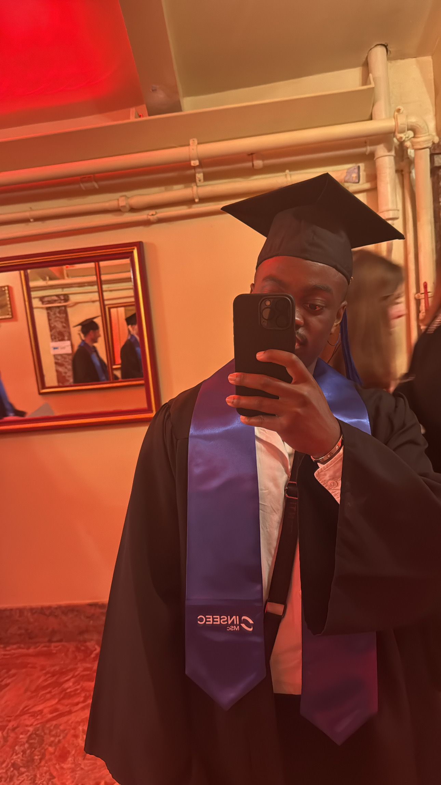

Evrard's Profile
Présentation
👟💡 Passionné de Data et de sneakers | Spécialiste en Marketing Digital 🚀📊 Enthousiaste de l'intersection entre les données, la mode et le marketing digital, je suis un jeune Data Analyst déterminé à apporter une touche analytique aux industries qui me passionnent. Mes compétences s'étendent de l'analyse approfondie des données à la création de stratégies percutantes pour propulser les marques vers de nouveaux sommets.
Voici mon LinkedinMes Passions
Je suis un passionné de musculation, de football et de mangas. Chaque jour, je m'entraîne avec détermination, je joue avec passion et je plonge dans des mondes imaginaires avec enthousiasme. Ces trois piliers façonnent ma vie et alimentent ma passion pour le mouvement, la compétition et la créativité.
Mes mangas Favoris


Mes sports
Le foot